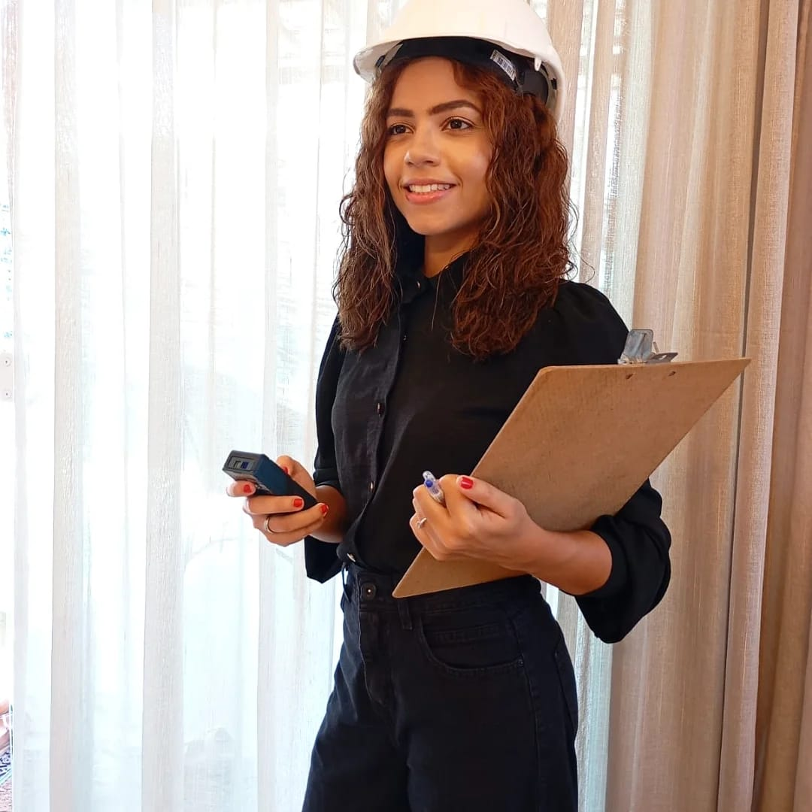
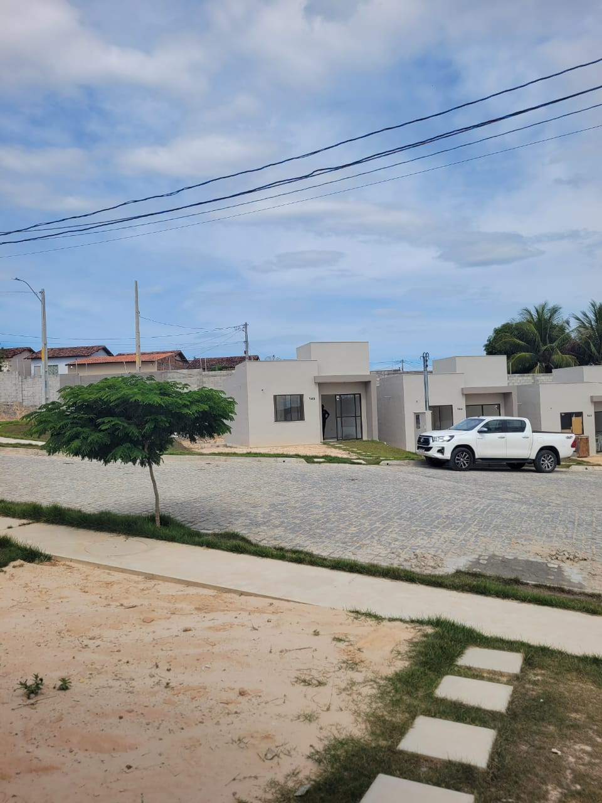

Para você receber seu imóvel com segurança.
Vistorias e serviços técnicos para identificar problemas, registrar as condições do imóvel e ajudá-lo a tomar decisões com mais segurança.


Ingrid Pascoal, engenheira civil
Ingrid Pascoal de Oliveira é Engenheira Civil, pós-graduada em Custos e Orçamentos, Especialista em Vistorias e Patologia das Construções, supervisora com serviços técnicos em imóveis na cidade de Salvador/BA e região metropolitana.
Meu objetivo é usar a engenharia para tornar esse processo mais seguro, claro e tranquilo para você.
- Atendimento próximo e personalizado — Cada imóvel é baseado em acordo com suas características.
- Olhar técnico aos detalhes — Identifique problemas que podem passar despercebidos no dia a dia.
- Tudo registrado — As condições causadas são documentadas com fotos e informações técnicas.
Meus Serviços
Serviços de engenharia para avaliar, registrar e documentar as condições do seu imóvel.
Vistoria de Imóvel Novo
Vai receber as chaves do seu imóvel? Faça uma análise detalhada para identificar problemas, falhas e acabamentos que precisam de atenção antes da entrega.

Parecer Técnico
Precisa registrar uma situação ou verificar se um serviço foi realizado? Analiso o caso e elaboro um documento técnico com as informações e registros necessários.
Solicitar parecer →Inspeção e Vistoria Técnica
Uma avaliação profissional das condições do imóvel para identificar e registrar problemas, anomalias ou situações que necessitem ser verificadas.
Avaliação do solicitante →Inspeção Predial
Avaliação das condições aparentes da edificação, ajudando a identificar problemas que necessitam de manutenção ou atenção técnica.
Solicitar →Projeto de Planta Baixa
Elaboração de Planta Baixa para regularização perante a prefeitura, garantindo que seu imóvel esteja em conformidade com a legislação vigente e apto para obter as aprovações possíveis.
Solicitar projeto →Deixe seu contato
Preencha o formulário ou me chame direto no WhatsApp.
Já foi cliente? Compartilhe sua experiência pelo formulário ao lado ou pelo WhatsApp.